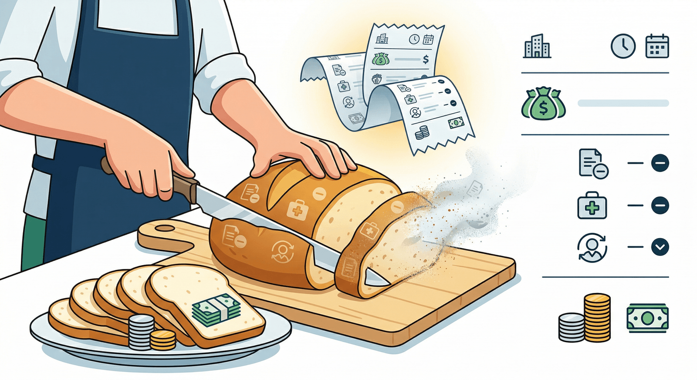

📌 NHỮNG LƯU Ý CƠ BẢN KHI DEAL LƯƠNG
(Bài viết dành cho ai còn mù mờ vụ deal lương)
Thú thật mình cũng mù mờ vụ deal lương lắm. Nhưng vì muốn làm chủ quyền lợi cũng như tự tin hơn khi trả lời câu “Mức lương em mong muốn là gì?”, hôm nay mình quyết tâm đi tìm hiểu và ngồi chia sẻ súc tích nhất cho mọi người (nếu còn thiếu gì thì hoan hỷ bổ sung nha cả nhà).
Phân biệt lương Gross và lương Net
1/Hiểu khái niệm Lương Net - Lương Gross
Nói nôm na:
-Lương Gross: Lương tổng bao gồm các phí bảo hiểm và thuế (giống như nguyên 1 cái bánh bao bao gồm vỏ bánh và nhân bánh)
-Lương Net: Lương về tay ting ting trong tài khoản của bạn (tức là nhân của cái bánh bao)
Thông thường các mức lương ghi trong JD, trong các báo cáo về lương thị trường thường là lương gross, tức là nếu ghi trong JD lương từ 10M~12M thì chưa chắc về tay bạn là đủ 10M hoặc 12M nha (vì có thể đó là lương gross).
Công thức và ví dụ tính lương Net
2/ Là người đi làm, đương nhiên chúng ta sẽ quan tâm nhất lương net là bao nhiêu. Vậy lương net được tính như thế nào?
Công thức:
Lương Net = Lương Gross - Bảo hiểm - Thuế thu nhập cá nhân
Ngoài ra:
Người lao động còn được giảm trừ gia cảnh bản thân (11tr) và giảm trừ người phụ thuộc như cha mẹ, con cái (4tr4/người)
Mức thu nhập chịu thuế = (Lương gross - bảo hiểm) - Khoản giảm trừ gia cảnh bản thân - Khoản giảm trừ người phụ thuộc
Trong trường hợp, mức thu nhập chịu thuế <5,000,000 —> Thuế TNCN bằng 0
Ví dụ
Lương Gross: 12,000,000/ Không người phụ thuộc
Bảo hiểm (% của lương gross)
-BHXH (8%): 8% x 12,000,000 = 960,000
-BHYT (1,5%): 1,5% X 12,000,000 =180,000
-BHTN (1%): 1% X 12,000,000= 120,000
—>Tổng bảo hiểm: 1,260,000
Mức thu nhập chịu thuế = 12,000,000 -1,260,000 - 11,000,000 = -260,000 <5,000,000 —> Thuế TNCN = 0
Lương Net
= Lương Gross - Bảo hiểm - Thuế thu nhập cá nhân
= 12,000,000 - 1,260,000 - 0
= 10,740,000
Kinh nghiệm thực tế khi deal lương
3/ Vậy khi deal lương, mọi người nên lưu ý điều gì?
Từ kinh nghiệm cá nhân, mình thường:
-Deal lương gross với điều kiện bản thân đã clear các chi phí như trên và nắm rõ trong tay lương net thực sự ting ting về tài khoản của mình bao nhiêu
-Lương gross dựa trên năng lực và giá thị trường (để không bị hớ)
-Confirm kỹ với công ty rằng các chi phí bảo hiểm, thuế được tính trên lương gross chứ không phải lương net (đảm bảo quyền lợi bảo hiểm của mình)
Bài viết 2:
Chào mọi người !
Post này chia sẻ chút kiến thức cho những bạn Mới ra trường nhé để Đảm Bảo quyền lợi bản thân nha.
Mình là Architect Designer với hơn 10 năm đi làm và cũng mất chừng đó thời gian, mình mới tìm hiểu được phần nào 1 kiến thức thường nhật cơ bản về LƯƠNG - BẢO HIỂM - THUẾ
Đây là thứ rất cơ bản của người lao động nhưng mình Không được Ai dạy cho nên sau này đi làm mới Ngớ người ra và kiểu Sao Cũng Được. Miễn lương Net về tay - Tiền tươi thóc thật là ngon nhưng mà Mình ko biết là mình đang mất rất Lợi Ích cho bản thân ở cả Hiện Tại và Tương Lai á.
Lương Gross và Lương Net theo góc nhìn thứ hai
- LƯƠNG: Lương Gross và Lương Net:
-
Lương Gross = Lương Net + Chi phí Bảo Hiểm + Thuế + ( công đoàn )
-
Lương Net= Số tiền thực nhận về tài khoản mỗi tháng.
• Khi mới ra trường mình đi phỏng vấn xin việc và deal lương thì mình thấy ở HN hay deal lương Net và ở SG hay deal lương Gross. Do đó khi deal lương bạn phải deal rõ nó là mức Net về Tay hoẵ bạn tự đổi Net→ Gross để về mức bạn mong muốn đề xuất với tuyển dụng.
• Mức lương BH cơ bản hình như từ 5,5tr ( năm 2025 )+ phụ cấp và max cỡ 46-48tr gì đó nên lương 100 củ cũng đóng ở mức max thui.
Note: Các công ty VN hay đóng mức cơ bản còn công ty nước ngoài hay đóng Full lương nên sau này quyền lợi mình cao hơn nhiều. Mình giải thích ở dưới.
Quyền lợi bảo hiểm xã hội cần biết
-
BẢO HIỂM:
-
Quỹ bảo hiểm xã hội bao gồm :
-
BH Y Tế (miễn đa phần 80-90% chi phí y tế khám chữa bệnh thông thường, bệnh nặng tuỳ bệnh có hạn mức )
-
BH Hưu Trí ( nếu bạn k muốn 80t vẫn đi làm thì đây nôm na tiền tuổi già của bạn )
-
BH Thất nghiệp ( 60% lương gross nhận từ 3-12 tháng - nhận sau khi nghỉ việc - Lương 20tr gross thì BHTN nhận 12tr x số tháng )
-
BH Thai sản ( Nhận full 6 tháng gross luôn - Lương gross 20tr nhận 120tr ( miễn thuế) nhé dù lương net nhận cỡ 17-18 thui )🤭
-
BH Quỹ Ốm bệnh: Bạn nghỉ ốm vẫn được nhận 1 phần lương đóng Bảo Hiểm nhé. Cái này BH chi trả không phải Công Ty. Nhưng mà phải có giấy của Viện.
Tạm thời đây là những lợi ích Cơ Bản nhất mà tôi biết , còn thiếu thì ai biết bổ sung thêm nhé.
Cách tính thuế thu nhập cá nhân
- THUẾ:
Mình chỉ nói về Thuế Thu Nhập Cá Nhân ( TNCN) thôi nhé.
- Thuế sẽ đóng theo luỹ tiến thu nhập nhưng ngày xưa mình không biết cứ nghĩ đi làm lương 20tr đóng 15-20% là bay mất 3-4tr á. Vô cùng NGỐ.
(Mình đã dùng lương Gross rồi so mức tính thuế nên nhìn hao vô cùng nhưng bị Sai á )
• Mức chịu thuế TNCN: Từ dưới 10tr-100tr là từ 5-35% ( gg là thấy)
• Thu nhập cá nhân miễn thuế:15,5tr/month từ 2026- Lương bạn dưới mức này bạn Không phải đóng thuế
• Thu nhập Cao Hơn 15,5/ tháng thì theo vd ở dưới.
Vd Lương 30tr -15,5tr - BH ..=11tr( Thu nhập đóng thuế thật sự - lúc này mới so trên bậc lương chịu thuế nhé )
- Nếu gđ có người nhà là ôb,bm , con ko có thu nhập va lương hưu (6,2tr/ ng)… Nhà bạn có 2 ng thì bạn được trừ hết và khỏi đóng Thuế luôn. Cỡ lương NET tăng thêm 5-700k thì 1 năm thêm 5-7tr á. Các bạn test trên mấy trang Gross-Net sẽ rõ nhé.
Note: Mình có đính kèm Ảnh để mọi người xem dễ hình dung nhé. Và đính kèm khoản Người SD lao động ( Công ty) trả cho bạn thì bạn sẽ hiểu là Lương bạn về tay 26tr nhưng công ty bỏ ra 36tr chênh 10tr nên bạn đòi lên lương 10% Gross và Net thì khác nhau lắm.
Nói vậy nhìn toàn cảnh 1 phần chi phí vận hành của công ty để thông cảm nhé. Còn để biết công ty nào Không Đóng BH là thì Bạn Thiệt đầu tiên nha.
• Tiền Hoàn Thuế:
Nếu 1 năm tổng thu nhập của bạn dưới 186tr/ năm (15,5tr/ tháng ) thì bạn sẽ được Hoàn Thuế. Bạn lấy được khi nào ? Đó là khi bạn nghỉ việc giữa chừng và làm freelance á. Bạn làm full năm thì công ty tự quyết toán bạn sẽ ko có. Hoặc bạn vào App ETax check nhé nếu có tiền thì bạn đòi công ty cũ chứng từ khấu trừ Thuế nên sẽ được hoàn nhé.
Mình sẽ VD rõ ràng cho mọi người về sự khác nhau về mức đóng BH khác nhau với 2 mức lương Net về tay bằng nhau là ntn. M chọn dưới mức chịu thuế 15,5 cho đỡ phức tạp.
So sánh 2 trường hợp đóng bảo hiểm
Trường hợp 1:
Bảo hiểm Full lương
• Lương Gross: 16,7tr
• Lương Net: 15tr
• Lương đóng BH:16,7tr
• BH thất nghiệp :
60% gross=10,2tr x3 month= 30,6 tr
• BH Thai Sản: Gross = 16,7 x 6 month= 100,2tr + ( 1g tan làm sớm mỗi ngày trong 6 tháng đến khi con đủ tuổi )
• Lương Hưu : 45% + 2% ( nhân hệ số năm ) = 6,75tr/ month ( tính tương đối )
Trường hợp 2:
Bảo hiểm lương cơn bản vùng tối thiểu 5,5tr
• Lương Gross: 15,577tr
• Lương Net: 5,5tr ( cơ bản) + bonus 9,5tr.
• Lương đóng BH: 5,5tr
• Mức đóng BH 10,5% = 577k
• BH thất nghiệp :
60% gross=3,3 x3 month= 9,9 tr
• BH Thai Sản: Gross = 5,5 x 6 month= 33tr + ( 1g tan làm sớm mỗi ngày trong 6 tháng đến khi con đủ tuổi )
• Lương Hưu : 45% + 2% ( nhân hệ số năm ) = 2,47tr ( tính tương đối )
Đây là 2 Ví Dụ Cơ Bản cho thấy Lương- Bảo Hiểm - Thuế quan trọng như thế nào. Nhất là quyền lợi Bảo Hiểm. Cùng 1 mức lương về Tay mỗi tháng là 15 triệu nhưng giá trị về Phúc Lợi lâu dài khác nhau rất lớn. Nên ngoài việc lương về tay thì Không nên Mặc Kệ tuỳ ý công ty đóng BH nhé. Khi đi PV hỏi kĩ vđ BH đóng full lương hay không ?
Mình có share thêm 1 video nói kĩ về BHXH á. Mn tự tìm hiểu thêm nhé
Mình không bán bảo hiểm hay tư vấn gì đâu.
Chia sẻ của mình chỉ ở mức cơ bản nhất có thể còn thiếu sót 1 vài chỗ mong mọi người hoan hỉ.
Mong Admin duyệt bài để anh em thêm chút gạo muối ấm tương lai đu nghề🥹
🔍 Phân tích bài viết
📌 Tóm tắt ý chính
Bài hướng dẫn thực hành ngắn gọn về sự khác biệt giữa lương Gross và lương Net tại Việt Nam. Lương Gross là tổng lương trước khi trừ bảo hiểm và thuế TNCN; lương Net là số tiền thực nhận vào tài khoản. Tác giả cung cấp công thức tính và ví dụ cụ thể (lương Gross 12 triệu → Net ~10.74 triệu), đồng thời đưa ra 3 lưu ý thực tế khi deal lương để không bị hớ và bảo vệ quyền lợi bảo hiểm.
💡 Insight & Góc nhìn đa chiều
Sự nhầm lẫn giữa Gross và Net không chỉ là vấn đề kiến thức — mà là vấn đề quyền lực thông tin. Người sử dụng lao động thường niêm yết lương Gross trong JD vì con số lớn hơn và hấp dẫn hơn, trong khi ứng viên thường nghĩ đó là lương thực nhận. Khoảng cách này có thể lên tới 10-15% ở mức lương thấp (dưới ngưỡng chịu thuế), và tới 20-30% ở mức lương cao hơn khi cộng thêm thuế TNCN lũy tiến. Điều quan trọng nhưng bài chưa đề cập: nhiều doanh nghiệp Việt Nam — đặc biệt SME và FDI nhỏ — trả lương Net và đóng bảo hiểm trên mức tối thiểu hoặc theo mức thấp hơn lương thực, gây thiệt hại cho người lao động khi nghỉ hưu hoặc hưởng chế độ BHXH.
🇻🇳 Liên hệ Việt Nam & cá nhân
Đây là kiến thức thiết yếu cho bất kỳ người đi làm nào ở Việt Nam, nhưng lại không được dạy trong hệ thống giáo dục. Hậu quả là hàng triệu lao động trẻ bị “lừa” bởi con số Gross hào nhoáng trong JD, rồi hụt hẫng khi nhận lương tháng đầu. Với người lao động trong các khu công nghiệp, chuỗi cung ứng xuất khẩu — những ngành có lương tương đối thấp — việc bị đóng bảo hiểm trên mức thấp hơn lương thực là phổ biến, và thiệt hại chỉ lộ rõ sau nhiều năm khi tính trợ cấp thôi việc hay lương hưu. Người đi làm cần chủ động hỏi rõ: “Mức lương này là Gross hay Net? Bảo hiểm đóng trên mức nào?”
⚖️ Phản biện
Bài viết đơn giản hóa một phần quan trọng: công thức và ví dụ chỉ đúng với người độc thân, không có người phụ thuộc, và thu nhập đến từ duy nhất một nguồn. Thực tế phức tạp hơn nhiều — có người có 2-3 nguồn thu nhập, có người phụ thuộc, có khoản khấu trừ từ thiện, v.v. Ngoài ra, mức giảm trừ gia cảnh 11 triệu/tháng được thiết lập từ 2020 và chưa được điều chỉnh theo lạm phát, khiến ngày càng nhiều người trung lưu bị đẩy vào vùng chịu thuế dù thu nhập thực tế không tăng bao nhiêu — đây là vấn đề chính sách quan trọng mà bài không đề cập.
📖 Giải thích thuật ngữ
- Lương Gross: Lương tổng trước khấu trừ. Ví dụ: bạn thỏa thuận 12 triệu, đó là Gross. Như cái bánh nguyên chiếc trước khi chia phần.
- Lương Net: Lương thực lĩnh sau khi trừ bảo hiểm và thuế. Như phần nhân bánh còn lại sau khi bóc vỏ.
- BHXH / BHYT / BHTN: Bảo hiểm Xã hội (8%), Bảo hiểm Y tế (1.5%), Bảo hiểm Thất nghiệp (1%) — người lao động đóng tổng cộng 10.5% lương Gross. Công ty đóng thêm phần của họ riêng (không trừ vào lương bạn).
- Thuế TNCN lũy tiến: Thuế tăng theo bậc thu nhập — càng kiếm nhiều, tỷ lệ thuế càng cao (từ 5% đến 35%). Không phải toàn bộ thu nhập bị đánh thuế một mức.
- Giảm trừ gia cảnh: Khoản được trừ trước khi tính thuế — bản thân được trừ 11 triệu/tháng, mỗi người phụ thuộc thêm 4.4 triệu.